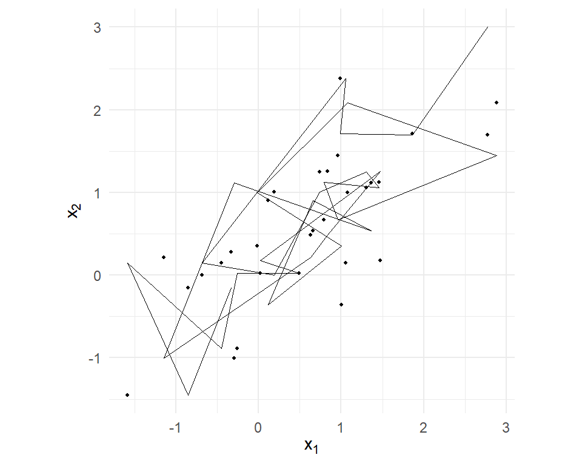

Metropolis–Hastings will sample anything, slowly. This chapter builds its efficient sibling and the model architecture that Part III exists for. The Gibbs sampler replaces M-H’s propose-and-mostly-reject shuffle with draws from exact conditional distributions — proposals so good they are never rejected — whenever the model’s structure supplies such conditionals. And the model structure that supplies them most beautifully is the hierarchy: person-level parameters drawn from a population, the formal home of everything Chapter 14 found missing. We develop both on models simple enough to see through — a hierarchical normal model, then a binary probit — because Chapter 17 assembles the HB-MNL entirely from blocks built here, and Chapter 19’s probit samplers are these ideas at scale.
16.1 Sampling by Blocks
Suppose the parameter vector splits into blocks \(\boldsymbol{\theta}= (\boldsymbol{\theta}_1, \boldsymbol{\theta}_2, \ldots)\) and, while the joint posterior is intractable, each full conditional — the distribution of one block given the data and all other blocks — is a known, sampleable distribution. The Gibbs sampler simply cycles:
— always conditioning on the most recent values of the other blocks. The resulting chain has the joint posterior as its stationary distribution, exactly like M-H;1 the practical differences are that every draw is accepted, there is no step size to tune, and the moves are calibrated to the local shape of the posterior by construction. The cost of admission: you must be able to derive and sample the conditionals — real analytic work, purchased model by model, mostly through a phenomenon called conjugacy.
A toy first, per the Chapter 15 discipline of testing samplers on known targets. The bivariate normal with correlation \(\rho\) has textbook conditionals — each coordinate given the other is univariate normal, \(x_1 | x_2 \sim N(\rho x_2, 1 - \rho^2)\) and symmetrically — so Gibbs needs six lines, and Section 2.4’s Cholesky method provides an exact benchmark:
Means and correlation on target. The chain’s path is worth one look — Gibbs moves in axis-parallel steps (one coordinate at a time), staircasing across the correlated ellipse:
path <-data.frame(x1 =rep(gx[1:30, 1], each =2)[-1],x2 =c(3, rep(gx[1:30, 2], each =2))[1:59])ggplot(path, aes(x1, x2)) +geom_path(linewidth =0.3) +geom_point(data =data.frame(x1 = gx[1:30, 1], x2 = gx[1:30, 2]),size =0.8) +coord_equal() +labs(x =expression(x[1]), y =expression(x[2]))

Figure 16.1: The first 30 moves of the Gibbs sampler on a correlated bivariate normal, from a far-off start: axis-parallel staircase steps, because each update changes one coordinate conditional on the other. High correlation makes the staircase treads small – a preview of why strongly dependent parameters mix slowly under coordinate-wise sampling.
Note the figure’s caption warning: correlation between blocks shrinks the staircase treads. It will return as practical advice — block correlated parameters together when you can.
16.2 Conjugacy: The Conditional-Distribution Factory
Where do sampleable conditionals come from? From prior-likelihood pairs whose product lands back in the prior’s family — conjugate pairs. One derivation, done honestly, powers everything below; the rest we state and use.
The normal–normal update. Data \(y_1, \ldots, y_n \stackrel{iid}{\sim}N(\theta, \sigma^2)\) with \(\sigma^2\) known; prior \(\theta \sim N(\mu_0, \tau_0^2)\). The posterior is proportional to prior times likelihood — two exponentials of quadratics in \(\theta\): \[p(\theta \mid \mathbf{y}) \;\propto\; \exp\!\left( -\frac{(\theta - \mu_0)^2}{2\tau_0^2} \right) \prod_{i=1}^{n} \exp\!\left( -\frac{(y_i - \theta)^2}{2\sigma^2} \right) \;\propto\; \exp\!\left( -\tfrac{1}{2}\!\left[ \theta^2 \left( \tau_0^{-2} + n\sigma^{-2} \right) - 2\theta \left( \tau_0^{-2}\mu_0 + n\sigma^{-2}\bar{y} \right) \right] \right)\] where every term free of \(\theta\) has been dropped into the proportionality sign. Now a reading-off rule worth memorizing on its own: anything of the form \(\exp(-\tfrac{1}{2}[a\theta^2 - 2b\theta])\) is an unnormalized \(N(b/a, \; 1/a)\) density — complete the square to see it. With \(a = \tau_0^{-2} + n\sigma^{-2}\) and \(b = \tau_0^{-2}\mu_0 + n\sigma^{-2}\bar{y}\), we read off
Memorize the shape, not the symbols: precisions add; the posterior mean is the precision-weighted average of prior mean and data mean. Rich data (large \(n\sigma^{-2}\)) pull the posterior onto \(\bar{y}\); thin data leave it near \(\mu_0\). That precision-weighted compromise is shrinkage — Chapter 14’s phenomenon, now with an exact formula — and you will see this update, in scalar and matrix dress, inside every sampler for the rest of the book.
Variances: the inverse-gamma update. For the variance of a normal with known mean, the conjugate prior is inverse-gamma: \(\sigma^2 \sim IG(a_0, b_0)\) yields \(\sigma^2 \mid \mathbf{y}\sim IG(a_0 + n/2, \; b_0 + \tfrac{1}{2}\sum (y_i - \theta)^2)\) — prior pseudo-observations plus data observations, prior sum-of-squares plus data sum-of-squares. (Its matrix generalization, the inverse-Wishart for covariance matrices, arrives in Chapter 17; same grammar.) Derivations: Gelman et al. (2013), or Rossi, Allenby, and McCulloch (2005) in exactly our setting.
16.3 The Hierarchical Normal Model
Now the architecture. Strip the choice modeling away from Chapter 14’s problem and what remains is this: repeated measurements on many units, each unit with its own parameter, the parameters themselves drawn from a population we also want to learn. The minimal version — our laptop shoppers, with each person’s willingness-to-spend on upgrades\(\beta_n\) measured noisily \(T\) times:2
(A notation caution: this \(\tau^2\) is the population variance — how much true willingness-to-spend varies across people — and has nothing to do with Chapter 15’s Metropolis step size \(\tau\). Gibbs has no step size, so the letter is free again, and \(\tau\) for a hierarchy’s spread is the standard choice.)
Three layers: data given person-parameters, person-parameters given population, priors on everything unknown. This is the mixed model of Chapter 13 in normal-linear miniature — and where MSL had to integrate the \(\beta_n\)’s out (they were nuisance obstacles to the likelihood), the Bayesian treatment keeps every \(\beta_n\)in the posterior as a first-class unknown: \(p(\boldsymbol{\beta}_{1:N}, \mu, \tau^2, \sigma^2 \mid \mathbf{y})\). What looked like the problem (hundreds of parameters!) becomes the solution, because every full conditional is conjugate:
\(\beta_n \mid \cdots\): normal–normal update (Equation 16.2) with “prior” \(N(\mu, \tau^2)\) and “data” person \(n\)’s \(T\) observations. One precision-weighted shrinkage per person.
\(\mu \mid \cdots\): normal–normal update treating the current \(\beta_n\)’s as data.
\(\tau^2 \mid \cdots\) and \(\sigma^2 \mid \cdots\) (where “\(\cdots\)” always means the data and every other current block): inverse-gamma updates, each applied to the residuals its block owns. The \(\beta_n\)’s are \(\tau^2\)’s “data”: \(\tau^2 \mid \cdots \sim IG\big(a_0 + N/2, \; b_0 + \tfrac{1}{2}\sum_n (\beta_n - \mu)^2\big)\). The observations are \(\sigma^2\)’s: \(\sigma^2 \mid \cdots \sim IG\big(a_0 + NT/2, \; b_0 + \tfrac{1}{2}\sum_{n,t} (y_{nt} - \beta_n)^2\big)\).
gibbs_hier <-function(y, id, S, mu0 =0, tau0sq =100, a0 =2, b0 =2) { N <-max(id) Tn <-tabulate(id) # obs per person ybar_n <-as.vector(rowsum(y, id)) / Tn beta <- ybar_n; mu <-mean(y); tau2 <-1; sig2 <-1 out <-list(beta =matrix(NA_real_, S, N), hyper =matrix(NA_real_, S, 3))for (s in1:S) {## person-level betas: precision-weighted normal draws, all N at once prec <-1/tau2 + Tn/sig2 m <- (mu/tau2 + Tn*ybar_n/sig2) / prec beta <-rnorm(N, m, sqrt(1/prec))## population mean precm <-1/tau0sq + N/tau2 mu <-rnorm(1, (mu0/tau0sq +sum(beta)/tau2) / precm, sqrt(1/precm))## population variance and noise variance tau2 <-1/rgamma(1, a0 + N/2, b0 +sum((beta - mu)^2)/2) sig2 <-1/rgamma(1, a0 +length(y)/2, b0 +sum((y - beta[id])^2)/2) out$beta[s, ] <- beta out$hyper[s, ] <-c(mu, sqrt(tau2), sqrt(sig2)) }colnames(out$hyper) <-c("mu", "tau", "sigma") out}
Every line is one of the two conjugate updates. Note the vectorization: all \(N\) person-draws happen in a single rnorm(N, ...) call, because given the hyperparameters the \(\beta_n\)’s are conditionally independent — the hierarchy’s structure is the code’s structure (and matrix(NA_real_, S, N) is Chapter 9’s preallocation rule earning its keep: this sampler stores half a million numbers). Simulate and recover:
mu tau sigma
truth 2.00 1.50 2.00
post_mean 2.08 1.47 1.95
post_sd 0.12 0.10 0.05
All three population parameters recovered, uncertainty attached, in seconds — no optimizer, no draws-inside-a-likelihood, no tuning. And the person level came along for free. Here is this book’s first fully honest individual-level inference, and the shrinkage geometry it produces:
Figure 16.2: Shrinkage, exactly: each person’s posterior-mean beta against their raw data mean (T = 5 observations each). The cloud tilts flatter than the 45-degree line, pulled toward the population mean (dashed) – extreme raw means are partly noise, and the precision-weighted update (Equation 16.2) discounts them accordingly.
The flattened cloud is Equation 16.2 acting on two hundred people at once: each posterior mean is a precision-weighted compromise between that person’s own average and the population’s. Chapter 14 met this as an ad-hoc extraction; here it is a theorem-grade consequence of the model, with the amount of shrinkage — the balance of \(\tau^{-2}\) against \(T\sigma^{-2}\) — itself estimated from the data. More data per person, less shrinkage; more real population spread, less shrinkage; the model negotiates it, not the analyst. This figure is the entire promise of Part III in one frame; Chapter 17 reproduces it with choice data.
16.4 Data Augmentation: The Albert–Chib Sampler
The hierarchy needed no new trick — conjugacy carried it. Choice data will, because a logit or probit likelihood is not conjugate to anything: the discreteness of \(y\) breaks the quadratic-in-parameters structure that Equation 16.2 feeds on. The escape, due to Albert and Chib (1993), is one of the loveliest moves in computational statistics: put the latent utilities back.
Recall the binary probit of Chapter 3: \(y_n = I[z_n > 0]\) where \(z_n = \mathbf{x}_n'\boldsymbol{\beta}+ \varepsilon_n\), \(\varepsilon_n \sim N(0,1)\). The observed \(y_n\) is a censored glimpse of a well-behaved linear-normal model in \(z_n\). So augment: treat \(\mathbf{z}\) as unknowns alongside \(\boldsymbol{\beta}\), and Gibbs the pair — each conditional is suddenly easy:
\(\boldsymbol{\beta}\mid \mathbf{z}\): with \(\mathbf{z}\) “observed,” this is Bayesian linear regression — normal prior, normal likelihood, so a multivariate Equation 16.2: \(\boldsymbol{\beta}\sim N\big( (X'X + B_0^{-1})^{-1}(X'\mathbf{z} + B_0^{-1}\mathbf{b}_0), \; (X'X + B_0^{-1})^{-1} \big)\).
\(z_n \mid \boldsymbol{\beta}, y_n\): normal with mean \(\mathbf{x}_n'\boldsymbol{\beta}\), truncated to the side of zero that agrees with the observed choice — positive if they bought, negative if not. Which is exactly what Chapter 2’s rtnorm() was built for, as promised there.
rtnorm <-function(n, mean =0, sd =1, a =-Inf, b =Inf) { # @sec-draws Fa <-pnorm(a, mean, sd); Fb <-pnorm(b, mean, sd)qnorm(Fa +runif(n) * (Fb - Fa), mean, sd)}gibbs_probit <-function(y, X, S, b0 =0, B0 =25) { K <-ncol(X) B0inv <-diag(1/B0, K) V <-solve(crossprod(X) + B0inv) # fixed: X never changes L <-t(chol(V)) # @sec-mvnorm, once beta <-rep(0, K) lo <-ifelse(y ==1, 0, -Inf); hi <-ifelse(y ==1, Inf, 0) draws <-matrix(NA_real_, S, K)for (s in1:S) { z <-rtnorm(length(y), as.vector(X %*% beta), 1, lo, hi) m <- V %*% (crossprod(X, z) + B0inv %*%rep(b0, K)) beta <-as.vector(m + L %*%rnorm(K)) draws[s, ] <- beta } draws}
Count what is absent: no Metropolis step, no acceptance rate, no tuning parameter, no likelihood evaluation — the probit likelihood never appears in the code. Its integrals (the \(\Phi\)’s that a probit MLE would evaluate) have been traded for truncated-normal draws, and every iteration draws from exact distributions. Note also the Chapter 9 economies: \(V\) and its Cholesky factor are data-only quantities, computed once outside the loop.
Test on binary probit laptop data — Chapter 3’s simulator, dist = "normal":
Recovery, tuning-free. Data augmentation is this book’s quiet superweapon: in Chapter 19 it makes the multinomial probit — whose likelihood is a \((J-1)\)-dimensional integral that Part II could only simulate — estimable by nothing more than truncated normals and regressions, and in Chapter 20 it does so with a full hierarchy on top. The general principle deserves its box: when a likelihood is intractable because something latent was integrated out, put the latent thing back and sample it. Latent utilities, latent classes (Chapter 11’s memberships can be Gibbs-sampled the same way), latent budgets (Chapter 22) — all one move.
16.5 Metropolis-within-Gibbs: The Missing Piece
Survey what Part III now has. M-H samples anything evaluable (Chapter 15) but wanders. Gibbs is exact and tuning-free but demands conjugate conditionals. The hierarchy gives person-level inference with automatic shrinkage — when the data layer is normal. And augmentation converts probit data layers into normal ones.
One target resists: the MNL data layer. The Gumbel-error structure has no Albert–Chib-style augmentation into conjugacy;3 the logit likelihood must be evaluated, not conjugated away. But nothing requires a Gibbs cycle to be conjugate in every block. Replace the unavailable exact draw, in just that block, with a Metropolis step targeting the block’s conditional — accept/reject by Equation 15.3, conditioning on all other blocks — and the chain remains valid: Metropolis-within-Gibbs. The blueprint for the next chapter writes itself: population mean and covariance, conjugate Gibbs draws (Equation 16.2 and inverse-Wishart, treating the current \(\boldsymbol{\beta}_n\)’s as data — literally gibbs_hier’s middle blocks); each person’s \(\boldsymbol{\beta}_n\), a small random-walk Metropolis step whose target is (population prior) × (that person’s eight-task MNL likelihood) — literally Chapter 15’s sampler, shrunk to one person’s data. Every component exists. Assembly is Chapter 17.
16.6 Key Learnings
Gibbs sampling cycles through blocks, drawing each from its full conditional (Equation 16.1): every draw accepted, nothing tuned, at the price of deriving conditionals. It is M-H with perfect proposals — and correlated blocks make its staircase treads small, so block wisely.
Conjugacy is the conditional factory. The normal–normal update (Equation 16.2) — precisions add, means precision-weight — is the single most reused formula in the rest of this book; inverse-gamma (and later inverse-Wishart) handles the variances.
The hierarchical normal model holds every person’s parameter in the posterior jointly with the population’s: person-level inference with estimated, automatic shrinkage (Figure 16.2) — Chapter 14’s ad-hoc extraction, rebuilt as a consequence of the model.
Data augmentation (Albert–Chib): reinstate latent utilities and the probit’s intractable likelihood dissolves into truncated-normal draws (rtnorm(), as promised in Chapter 2) plus Bayesian regression. No tuning, no likelihood evaluations. The same move powers the MNP samplers of Part IV.
The MNL layer alone resists conjugation; Metropolis-within-Gibbs — exact draws where available, M-H steps where not — closes the gap. All HB-MNL components are now on the bench.
Albert, James H., and Siddhartha Chib. 1993. “Bayesian Analysis of Binary and Polychotomous Response Data.”Journal of the American Statistical Association 88 (422): 669–79.
Gelman, Andrew, John B. Carlin, Hal S. Stern, David B. Dunson, Aki Vehtari, and Donald B. Rubin. 2013. Bayesian Data Analysis. CRC press.
Rossi, Peter E., Greg M. Allenby, and Robert McCulloch. 2005. Bayesian Statistics and Marketing. John Wiley & Sons.
The connection is exact: a Gibbs block-update is a Metropolis–Hastings step whose proposal is the full conditional itself, for which the acceptance ratio works out to precisely 1. One algorithm, two ends of a proposal-quality spectrum — a fact we exploit in Chapter 17 by mixing the two within one cycle.↩︎
The stripped-down story: imagine observing, for each of \(N\) shoppers, \(T\) noisy dollar amounts spent on laptop upgrades. Nothing here is choice modeling — deliberately. The hierarchy is the lesson; the MNL kernel plugs back in next chapter.↩︎
A Pólya-Gamma augmentation does exist for logit models and is a lovely modern development — but the Metropolis-within-Gibbs route is standard in choice modeling, more general, and builds directly on our Chapter 15 machinery, so we take it.↩︎